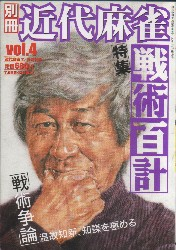

活字系麻雀メディアといえば、長らく「月刊プロ麻雀」だけだった。そこへ活字系麻雀誌「別冊近代麻雀」が復活。どんな雑誌なのか興味津々だった。
創刊号を見た感想は、「ほう、面白いじゃん」、今月（Ｈ16．6）で４号めになるが、その感想は変わらない。

複数の小説から対談、軽いコラムから歴史発掘、戦術論に業界情報、麻雀本や麻雀ビデオの紹介など、内容も多岐にわたって、さながら麻雀のフルコース。雑誌の厚みも15分（ふん＝１センチ以上(笑) ）もあって、読み応えがある。
いしいひさいちの東三国史には、毎回大笑いする。変則麻雀がテーマの麻雀千夜一夜（佐野洋）も面白い。
第１話の12枚麻雀は、むかしの十二麻雀（ソニーマージャン）。それを紹介しただけなら、“ふん”と思うだけだが、オールマイテイ牌を捨てたらどうなるかとか、ルール検証が面白かった。
第３話の山手線麻雀も
           
が  マチではなくて、 マチではなくて、  マチ。そこでリーチしてた主人公が見逃しでチョンボとなるというオチも面白かった。さすがは佐野洋、筆力が違う。 マチ。そこでリーチしてた主人公が見逃しでチョンボとなるというオチも面白かった。さすがは佐野洋、筆力が違う。
第４話の混合麻雀にしても、よくありがちのセットミスを変則麻雀にしたてあげるという発想に、「ほうほう」と思わず感心。
押川雲太郎の「どないすんねん」も自伝？の迫力があって面白い。前回の、主人公がタッグ相手を逆ハメするなんてのは、まさに麻雀放浪記の世界。今回は雀クマコンビに見事にハメられているが、主人公もハメたりハメられたり大変そう。(^-^； しかしどうして今月号は休載なのかな？
いずれにしても読み物系の専門雑誌としてこいだけのボリュームをキープするのはかなり大変。本格的麻雀雑誌として、今後も大いにがんばってもらいたい。
|